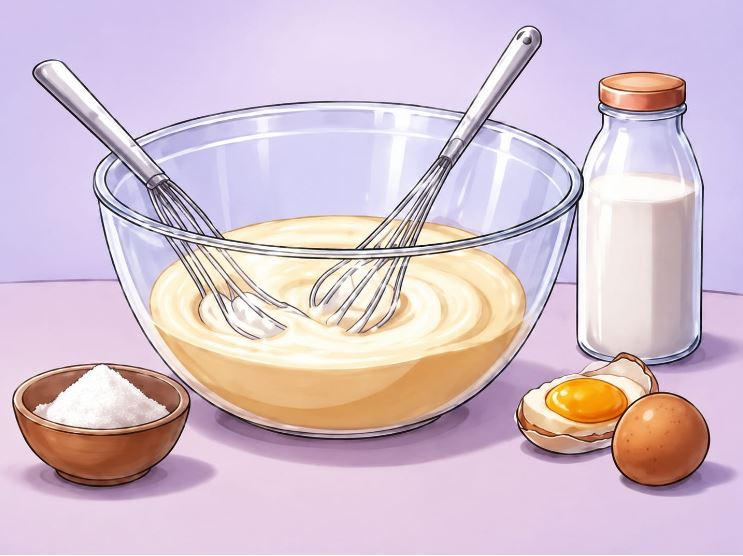
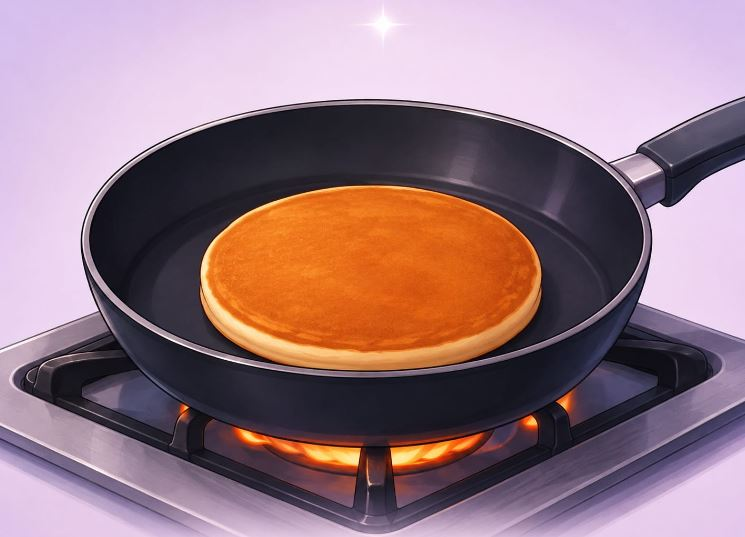
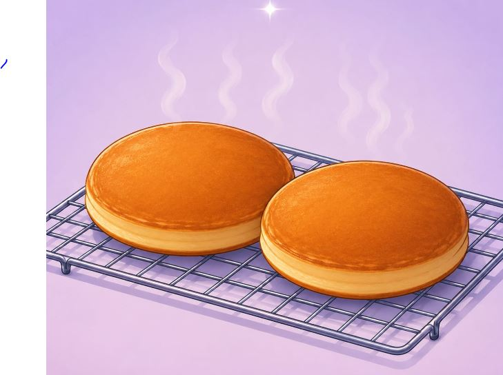
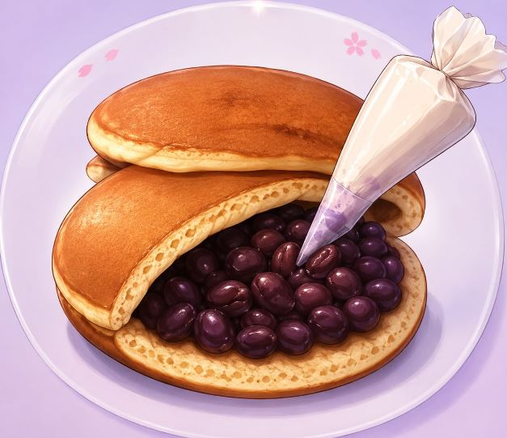
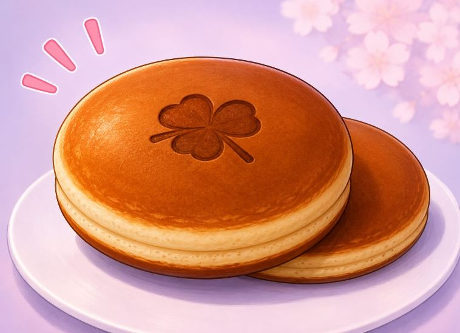

🌸 Preparación 🌸
💗 De nuestros dorayakis 💗
En KOKORO SWEETS, cada dorayaki es preparado con amor y de forma artesanal. Utilizamos ingredientes seleccionados para conseguir un sabor delicioso y una textura suave y esponjosa.

Preparamos la masa
Mezclamos los ingredientes seleccionados como harina, huevo, azúcar, miel y leche hasta obtener una masa suave y homogénea.

Reposo de la masa
Dejamos reposar la masa durante unos minutos. Esto ayuda a conseguir que los dorayakis queden más esponjosos y suaves.

Cocción
Vertemos la masa en pequeñas porciones sobre una sartén caliente y cocinamos hasta que aparezcan pequeñas burbujas.

Dejamos enfriar
Retiramos los panqueques y los dejamos enfriar para que tengan la textura perfecta antes de colocar el relleno.

Rellenamos
Agregamos generosamente nuestros deliciosos rellenos artesanales entre los dos panqueques.

Listos para disfrutar
Nuestros dorayakis están listos para disfrutar. Puedes compartirlos con tus amigos, familiares o alguien especial.
Ingredientes principales
- Harina de trigo
- Huevo fresco
- Azúcar
- Miel
- Leche
- Leudante
- Rellenos artesanales